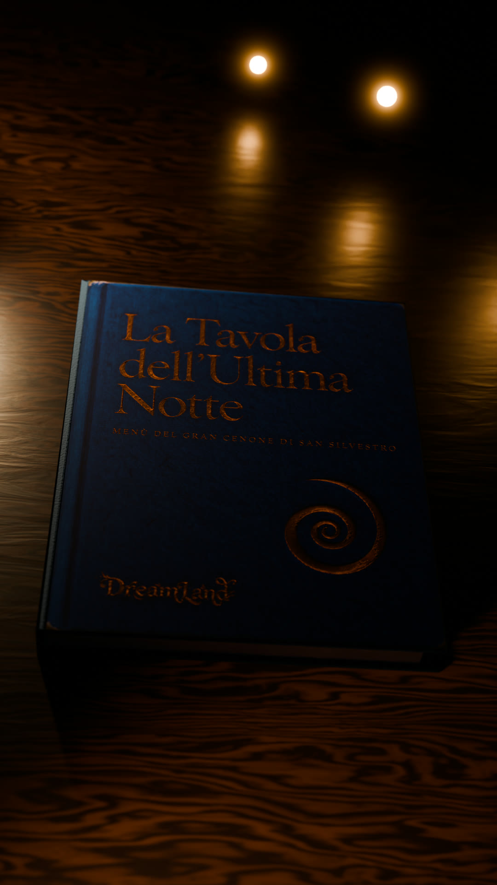

L’audio è bloccato dal browser.
Accendo la candela…
Questa pagina non si carica.
Controlla la connessione e riprova.
Il finale non è ancora scritto. Si scrive a mezzanotte, a tavola.
31 dicembreFeudo della Selva, Foggia
